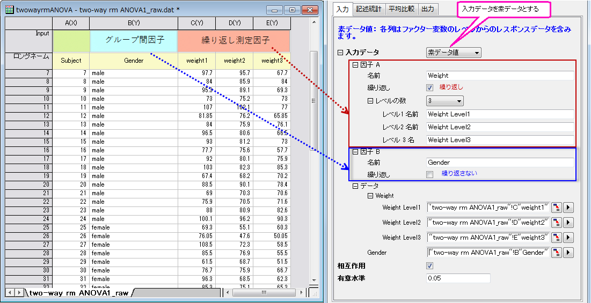

二元配置混合計画分散分析
2Way-Mixed-Design-ANOVA
概要
二元配置混合分散分析は、二元配置の分割法(SPANOVA)としても知られています。繰り返し測定のある1つの因子とグループ間因子のANOVAです。
必要なOriginのバージョン: OriginPro 2016 SR0以降
学習する項目
このチュートリアルでは、以下の項目について解説します。
- 二元配置混合分析の実行
- 繰り返しのある二元配置混合分析の結果を解釈する
ユーザストーリー
研究者はある処置が人々の減量の助けになっているかどうかを知りたい。48人（24人は男性）の被験者がこの実験に参加しています。処置プログラムの期間、3か月ごとに彼らの体重を研究者は記録していきます。
分析データの準備
二元配置の混合分散分析ANOVAを実施するには、次のようにデータを準備する必要があります。
| Notes: 二元配置混合分析を実行するために、、データはインデックスモードに編集することも出来ます。このチュートリアルのデータをインデックスモードについては、次のサンプルデータを参照します。 \Samples\Statistics\ANOVA\two-way rm ANOVA1_indexed.dat,
|
二元配置混合分析の実行
- 新しいプロジェクトまたは新しいワークブックを開きます。データファイル\Samples\Statistics\ANOVA\two-way rm ANOVA1_raw.datをインポートします。
- メニューから、統計: ANOVA: 二元配置(繰り返し測定)を選択します。
- 開いたダイアログの「入力」タブで、
- 入力データを素データ値に設定し、
- 因子Aのブランチを開き、名前をWeightに変え、レベルの数を3に設定します。因子Bのブランチを開き、名前をGenderに変え、繰り返しからチェックを外します。
- データのブランチで、C, D列とE列をWeight Level1, Weight Level2 及び Weight Level3にそれぞれ設定し、B列はGenderに設定します。
- 相互作用のボックスにチェックを入れます。
- 
- 記述統計タブを選択し、全てのボックスにチェックを入れます。
- 平均比較のタブを開いて、Bonferroni のチェックボックスにチェックを入れます。
-
- OK ボタンをクリックして、分析を実行します。
結果の解釈
ANOVATwoWayRM1ワークシートを開き、分析結果の表を開きます。
繰り返しのある二元配置ANOVAの結果の読み取りについての詳細は、結果の解釈のヘルプページを参照してください。
.
- Mauchlyの球面性検定の欄から、Prob>カイ二乗(0.01258) < 0.05を確認出来ます。繰り返し測定変数、Weightは、球面性の過程を満たしています。Greenhouse-Geisser 補正なども考慮する必要があります。Epsilonが0.75より大きい場合は、次のステップ2にある、Huynh and Feldt 補正に着目します。
-
- 被験者内要因の検定の欄を見ると、
- Weightの項目で、確率>F列のp値はほぼ 0です。これは、体重は常に変動する有意に影響していることを示しています。
- Weight*Genderが明らかに異なる場合(p_value = 0.14025)、Weight*Genderは明らかに有意に影響していないと結論づけられます。
- 処置を行っている間に、体重がどのように変化しているかをさらに調査することが出来ます。Weight ブランチを広げ、表からわかることは、
- 記述統計の欄から、体重が減少していることが分かります。
- 対比較の欄にある有意義フラグ列の1 は、対になっているグループが有意に異なることを示しています。体重が有意に減少していると結論づけることが出来ます。
- 被験者間要因の検定の欄で、Genderが影響しており、男性と女性では有意に異なることが分かります。
- Genderブランチを見て、次の詳細を確認します。
- ここには、2つのレベルの性別が存在しており、違いも分かっているので、対比較の欄を確認する必要はありません。
- 記述統計の欄で、男性の平均体重のほうが女性の体重より重いことが分かります。
| Notes：球面性の過程の深刻な違反は無いので、多変量検定の欄は無視することが出来ます。詳細は結果の解釈のヘルプページをご覧ください。
|